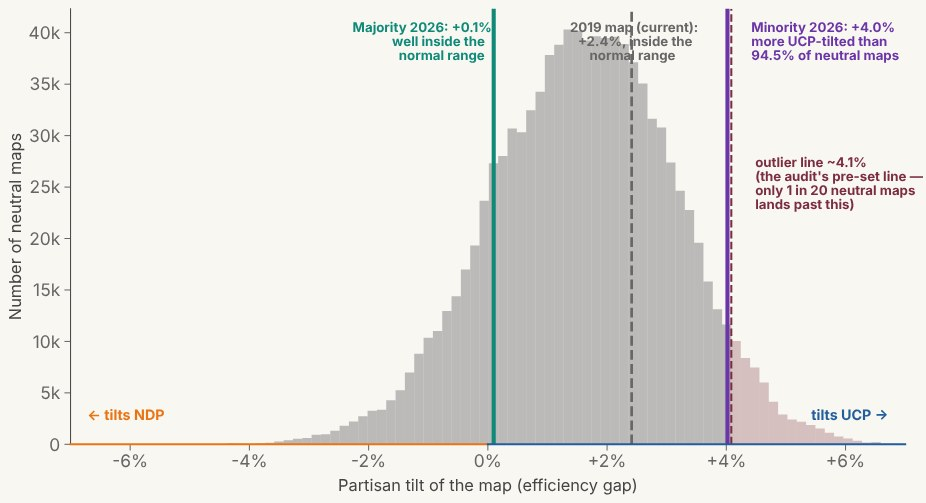

Here is every finding behind the main page, in full. Each one says what I found. Nearly all also say what it might suggest, what’s normal in Canada, and why it isn’t proof, including what the law does with it. Most of them compare the two maps the commission filed in March 2026. The commission split 3 to 2, so its majority and its minority each filed a map. Finding 15 checks the panel that drew the new 91-riding map. (A riding is the area that elects one MLA.) Read the page as a log. The findings that cut against the audit sit right beside the ones that support it.
The lines: what each map does on the ground
1. The minority map splits Airdrie, a city of 85,805, into four ridings
What I found. The minority map splits the City of Airdrie into four pieces. Airdrie has 85,805 people (2024 municipal census). It has one council, one tax bill and one set of city services. The law caps each riding at one and a quarter times the provincial average, so Airdrie needs at least two ridings. The majority map gives it two. The minority map gives it four. A piece in the north, about 350 people, goes to Olds-Three Hills-Didsbury. The east goes to Airdrie East, which takes more than half the city; nine in ten of its people live in Airdrie. The west goes to Calgary-Foothills-Airdrie West, and the centre-south to Calgary-Airdrie. In those two ridings, Calgary residents outnumber Airdrie’s. I tested the split for cracking: splitting a community so thinly that it decides nothing (academic report §5.3.2). I wrote that test’s rules in the same session I first ran it, so it counts as added later. The test has two bars. The first is more pieces than the city’s size requires. The minority’s split clears it. The second is that Airdrie’s residents are outnumbered in every piece. The split fails that one, because of Airdrie East. By the test’s own rule, that is not cracking. The majority’s two-way split fails both bars.

What it might suggest. Outside Airdrie East, the minority’s split is cracking as the textbook defines it. Picture an Airdrie resident with a question for her MLA. She has to know which part of the city she lives in before she can call the right office. The parents’ group at her child’s school can’t send one delegation to one MLA. It has to send four, to four offices, and three of those MLAs answer first to voters outside Airdrie. If you wanted to weaken the voice of a fast-growing, hard-fought city, this is what it would look like.
What’s normal in Canada. Canadian commissions treat keeping a city whole as a core part of community of interest: the shared ties the law asks boundary drawers to weigh. Splitting a city this size in two is routine. Splitting it four ways, so that nearly half its people are outnumbered, is not. And the same commission’s majority map shows that a two-way split was possible on the same ground.
Why it isn’t proof. The Electoral Boundaries Commission Act allows a city to be split. Community of interest is one factor among several the Act lists, and it does not bind. The leading case on effective representation, the Supreme Court’s Saskatchewan Reference, tells courts to defer to how boundary drawers weigh those factors. I found no Canadian decision that struck down a map for splitting a city. Both maps are legal. The four-way split is a choice. Under Canadian law, choices inside the Act’s wide limits belong to whoever draws the map. (Legal lesson 1: the Act’s factors are left to judgment, and courts defer.)
2. The majority flagged four of the minority’s boundaries as odd, and my tests confirm three
What I found. The commission’s majority is the chair and two members. They were appointed under the same Act as the minority and worked from the same submissions. Their report, the commission’s official final report, flags four of the minority map’s boundaries as odd on the map. Three of them are the Rocky Mountain House-Banff Park riding’s reach into empty national-park land, the lasso-shaped corridor of Calgary-Nolan Hill-Cochrane, and the reach of Olds-Three Hills-Didsbury into north Airdrie. The report calls the park extension “a bad faith effort” to claim a population exception written for remote communities where people actually live. The majority raised no such flags against its own map. On its own, that proves little: you would expect criticism to run only at the other side. What gives the flags weight is my own shape tests, which score both maps by the same rules. They confirmed odd shapes for three of the majority’s four flags. The fourth, Calgary-Foothills-Airdrie West, did not meet my bar. (The report’s published criticism covers seven boundary arrangements in all.)
What it might suggest. The commission’s majority, the chair among them, accused its colleagues in the official report of using the remote-riding exception, s.15(2), in bad faith. My check undercuts the charge: the riding qualifies without the park. The charge shows how deep the split ran. It does not show that the exception was gamed.
What experts say. Spotting a gerrymander, lines drawn to give a party an advantage, began with strange shapes. Corridors and reaches into empty land are the classic signs. In fairness, the Banff arrangement has a sound geography behind its odd name and odd shape. The town of Banff sits inside a federal park it cannot grow into, and grouping it with Canmore makes sense as a community. My Banff analysis gives that side of the story full credit. It also tests the charge itself, and undercuts it. Without the empty park land, the riding still meets four of the five tests for the remote-riding exception (s.15(2) of the Act), so it never needed the park. What the town’s placement cannot explain is why the line runs out into the park at all.
What’s normal in Canada. Commissioners disagree in their reports all the time. A commission majority accusing its colleagues of bad faith in the official final report is rare. I know of no other case, though I have not searched past reports one by one.
Why it isn’t proof. The majority’s words are opinion, in a report with no legal force. “Bad faith” in a commission report is a charge, not a ruling: no tribunal ever weighed it. Under the Act, both reports were advice, and only advice, from the moment they were filed. The Legislature could set them both aside. It did. (Legal lesson 2: commission reports bind no one. The Legislature holds the pen.)
Explainer: shape analysis and what s.15(2) protection is for
3. In north-east and central Calgary, the minority map’s ridings hold more people
What I found. Take one zone of Calgary: the city’s north-east and centre. Same commission, same rules. On the minority map, the zone’s seventeen ridings hold on average 11.5% more people than the provincial average. On the majority map they hold 2.8% more. So on one map they come out about 8.4% larger than on the other. The zone’s lists of ridings were first written, on April 22, as ridings where the NDP is competitive against ridings the UCP dominates. They were later described by geography, with the same ridings in each list. On a literal reading of that geographic rule, the figures are 8.5% to 8.9% for the minority and 1.3% to 1.6% for the majority. That is a finding about equal population. It is not packing. Packing means crowding one party’s voters into a few ridings it wins by wide margins. My packing test (academic report §5.3.1) needs the zone’s NDP-won ridings to be won by wide margins, at least 15 points above the provincial average. On 2023’s votes, the NDP wins eight of the minority map’s seventeen, by an average of 15.0 points. That is 12.6 below the provincial average of 27.6. So the test fails, and it finds no packing. I wrote its rules in the same sitting I first ran it, so it was a test added later from the start.
What it might suggest. A bigger riding means each ballot in it counts for a little less, whoever casts it. Crowding one party’s voters into fewer, bigger ridings is called packing. With cracking (finding 1), it is one of the two classic gerrymandering moves. Here the size gap is real. The wide winning margins that would mark packing are not there.
What’s normal in Canada. Some spread from the average is normal inside the legal limits. But Canadian commissions back it with community-of-interest reasons. The minority’s published reasons for this zone are among those checked in finding 11.
Why it isn’t proof. Every one of those ridings sits inside the Act’s limit of 25% above or below the average. Canadian law gives no grounds to sue over a map’s effect on parties. Section 3 of the Charter protects each citizen’s effective representation: a real voice, not just equal numbers. It does not promise parties that votes will turn into seats in proportion, and no Canadian court has read it that way. (Legal lesson 3: inside the limits, a size gap is a lawful choice. Harm to a party is not a harm the law recognizes.)
4. The minority map is less equal in population, the one thing the law measures
What I found. Take each riding and measure how far its population is from an equal share. Then average those gaps. That average is called the mean absolute deviation, or MAD. On the commission’s own population tables, the minority map’s ridings stray further from equal than the majority’s. Its MAD is 4,707 people, against 3,180: 48% wider. On 2021 census numbers the difference is smaller. There, the two maps’ average gaps are almost the same. But the minority’s median gap, the gap for the riding in the middle of the pack, is still wider: 3,938 against 2,827. I compared that with maps a computer drew without ever seeing a vote, keeping each riding within 12.5% of the average. Against them, the minority’s median gap sits at the 99th percentile: wider than 99 in 100 of them. Against computer-drawn maps allowed the Act’s full 25%, both commission maps sit at the low end of the range, where the gaps are smallest.
What it might suggest. Equal votes, each one weighing the same, is the one value the Act measures in every riding. On the commission’s own figures, the minority map gives up more of it than the majority map drawn beside it. The usual defence of odd lines is that they were needed to even out population. Here that runs backwards. The minority map is the less equal of the two.
What’s normal in Canada. Canadian commissions treat the allowed spread as a limit, not a budget to spend. In Alberta, the commission itself sees “a clear historic trend” “towards greater emphasis on voter parity”, that is, on equal votes (final report, p. 24).
Why it isn’t proof. The Act’s one population rule is the limit of 25% above or below the average. Up to four remote ridings may sit as much as 50% below the average (s.15(2)). Each map uses three of those four. No riding on either map breaks the rule. Inside the limit, the law does not rank maps. A wider spread and a tighter one are the same in law. (Legal lesson 4: the Act has one population rule, and the minority map follows it.)
5. Both maps follow city and town lines about as often as the 2019 map does
What I found. How often does a riding line follow a city or town boundary? On the majority map, 80% of the time. On the minority map, 72%. The 2019 map, drawn by the last commission and still in use, does it 75% of the time. This test does not tell the two maps apart.
What it might suggest. When a riding line follows a city or town line, the property-tax line and the election line match, and often the school-division line too. Voters can tell where their riding begins and ends. On that measure the two maps look alike.
Why it isn’t proof. It settles nothing either way. Both maps sit close to the 2019 map, and the Act sets no minimum for this.
Explainer: what municipal anchoring measures, and what it can’t show

Against computer-drawn maps: how unusual each map is
6. Split the vote 50-50, and the minority map gives the UCP a larger share of seats than all but 69 of 1,010,000 computer-drawn maps
What I found. Imagine the whole province’s vote split exactly in half. How many seats would each map give the UCP? I asked the same question of 1,010,000 maps a computer drew without ever seeing a vote. Those computer-drawn maps have 87 ridings, the number on the 2019 map. The middle one gives the UCP 44.8% of the seats. The highest any of them reaches is 51.72%, which is 45 of 87 seats. The 2019 map, still in use today, gives the UCP 46.0%. That is the 65th percentile, or the 78th if every map that ties it is counted below it. The commission’s majority map gives 46.1%. That is the 78th percentile, an ordinary result. The commission’s minority map gives 51.69%, which is 46 of its 89 seats. Only 69 of the 1,010,000 computer-drawn maps give the UCP more, and all 69 sit at the same value, 51.72%. That puts the minority map at the 99.99th percentile: further out than all but about 1 in 10,000. Two other fairness measures that were set in advance point the same way, toward the UCP. On the mean-median gap, the minority map sits further out than 99.97% of the computer-drawn maps. On declination, it sits further out than 98.8%. What does that mean in seats? Replay the 2023 election using only ballots cast on election day. The minority map gives the UCP 60 of 89 seats, and the majority map gives 55. Count all 2023 ballots, which every vote-based test on this site uses, and the registered count gives 57 and 48. That count is partly an estimate. About half of 2023’s ballots were cast before election day, and Elections Alberta reports them only for each old riding. So I have to place them inside the new ridings by a rule. The registered rule, rule P, places them only among people who did not vote on election day, using Alberta data only. The older rule, kept as a check, gives 55 and 48. The whole difference is two Calgary seats on the minority map, Calgary-Edgemont and Calgary-Glenmore, which go to the UCP by 401 and 68 modelled votes. No seat moves across the range of early-voter lean the Alberta data allow, but that range covers only the lean, so it understates the real uncertainty. Rule P is Amendment 14, signed on November 10, 2026. It was chosen after its effect on the maps was known, so it is not blind.
What it might suggest. Neutral drawing almost never produces a map like the minority’s. The majority map is the kind a neutral process turns out all the time. The minority map is the kind you have to aim to draw.
What’s normal in Canada. No Canadian commission has ever had to test its map against computer-drawn maps like these. I am holding the process to a standard it never had to meet. That is why the result tells you something, and why it binds no one.
Why it isn’t proof. There are two limits, one legal and one statistical. The legal limit: as far as I found, no Canadian court has yet weighed evidence like this. In the United States, the Supreme Court held in Rucho v. Common Cause (2019) that even strong statistical evidence of partisan gerrymandering is not for federal courts to police. A percentile describes where a map sits. It is not a line a map crosses. The statistical limit: the computer-drawn maps keep every riding near the same population and in one piece. They do not follow every rule the commission weighed: the s.15(2) exception for remote ridings, community of interest, and following town and city lines. So the percentiles measure how far out a map is against these maps, not against every map a lawful commission might have drawn. They also have 87 ridings, not the commission’s 89. A run that draws 89 ridings, and keeps the s.15(2) ridings where the commission put them, still puts the minority map past the 98th percentile on the three measures where it sits at the far edge. That same-size comparison is still provisional. It is a strong outside check, not a perfect one. One more limit: real elections are not split 50-50. A big enough swing in votes can outweigh any map’s lean. The 50-50 test shows what the map adds on its own, not who would win. (Legal lesson 5: the best kind of evidence in this field has no legal home in Canada.)
Explainer: how the what-if machine works and how to read a percentile
7. One fairness measure, the efficiency gap, missed the line I set in advance
What I found. That leaves the fourth fairness measure, the efficiency gap. It is one number for how unevenly each party’s votes turn into seats. It counts wasted votes: every vote for a loser, plus a winner’s votes beyond what it needed. A positive gap favours the UCP. On election-day ballots, the minority map’s gap is +4.0%, at the 94.5th percentile. The line I set in advance is the 95th percentile, about +4.1% among the computer-drawn maps. So the minority map missed. It leans toward the UCP, but it falls short of the line, and every table on this site shows it that way. The majority map’s gap is +0.1%, at the 16.5th percentile.
What it might suggest. On its own, almost nothing. That is why it is in the record.
Why it isn’t proof. I do not claim it as evidence at all. It is here to show the record was counted honestly. Setting the line in advance cuts both ways. The same fixed line that gives the other measures their force makes this one a miss. And a miss it stays. (On November 7, 2026, I registered a change that moved every vote-based test to all 2023 ballots. I wrote that change after I had seen the all-ballots results, the minority map’s included, so it was not blind. On November 10, I signed the rule for placing early ballots inside each riding, rule P (Amendment 14). I chose it after I had seen its effect, so it is not blind either. On all ballots under rule P the line is +2.15%, and the minority’s gap is +5.64%, above it. Only 192 of 1,010,000 computer-drawn maps reach it. On the older rule, kept as a check, the line is +1.39% and the gap +2.55%, also above it. The result on election-day ballots here is not reopened; see the panel’s map, on the main page.) (Lesson about evidence: the line was set before the answer was known, so the answer is allowed to be “no.”)

8. The odds of a map like the minority’s: between 1 in 20,000 and 1 in 570,000, and what that number is not
What I found. Picture a way of drawing maps that has no aim. How likely is it to produce a map like the minority’s, on all four fairness measures at once? Between about 1 in 20,000 and about 1 in 570,000, depending on how the figure is worked out. Each figure is a model estimate, not a bound, on election-day ballots. The four measures are combined into one score before any odds are worked out, so they count as one look, not four. On that combined score, none of the 1,010,000 computer-drawn maps sits as far out as the minority’s, so the odds cannot be counted from them. They come from a curve fitted to them. Where the curve can be checked, there are 1.2 to 3 times as many far-out maps as the curve predicts, so the true chance is probably higher than the model says. The published model gives about 1 in 570,000 (p ≈ 8.84×10⁻⁷, doubled to ≈ 1.77×10⁻⁶). The doubling is a cautious allowance, not a correction for a stated set of tests. Other fair choices give about 1 in 449,000 with a more cautious curve; 1 in 238,000 on a rank-based version; 1 in 97,000 after dropping one of two measures that come close to counting the same thing twice; and 1 in 20,000 on a second, smaller run with a different drawing engine. On the rank-based score, 7 of the 1,010,000 computer-drawn maps reach the minority map’s distance. No all-ballots version exists, because the computer-drawn maps’ all-ballots scores are not in the repository.
What it might suggest. You will want this number to mean “the chance the map is innocent.” It is my strongest single number, and the pull to read it that way is strong.
What experts say. The number is well defined. It is the chance that a map with this profile turns up when maps are drawn with no aim. In statistics, mixing up “the chance of this evidence if innocent” with “the chance of innocence given this evidence” has a name: the prosecutor’s fallacy. It has sent innocent people to prison. This record refuses the swap. How rare the map is among maps drawn with no aim is not the chance of wrongdoing. To get that, you would need things no one has, such as how often honest drawers produce odd maps.
What’s normal in Canada. No Canadian legal standard uses a number like this. There is no line for it to cross, because the law never set one.
Why it isn’t proof. A map this rare can still, in principle, come from unusual but honest judgment. The number measures how far outside neutral drawing the map sits. It cannot see motive, and I will not pretend it can. What I do claim is the weaker statement, and it is well supported: drawing that follows the rules and never looks at votes almost never produces this profile. The explanation, I leave to you. (Lesson about law and evidence: the odds of a map are not the odds of intent.)
9. I tried to knock down my own result: one check held, one was too small to settle it, and one could not be run
What I found. I made three attempts to knock down my own main result: the minority map’s place at the far edge of the computer-drawn maps. The results were mixed, and all of them are reported. First, I swapped the drawing engine, the method that makes the computer-drawn maps, for a different kind (a spanning-forest sampler, registered at OSF as he53s and run on 2026-07-10). Every measure’s percentile moved by less than one point. That meets the registered rule for a “robust” result on all four. But the run fell far short of the sample size it registered, so I read it as inconclusive at this run size, not as a finding that the result is robust. This far out at the edge, a fraction of a point matters: on the new engine, more than ten times as many maps reach the minority’s seat value as on the main run. So it shows the map stays far out, not exactly how far. Second, I swapped the software. An independent program (the R redist package) drew 5,000 maps, and none reached the minority’s value. On that smaller run the majority map sits just above the 95th percentile; on the main run, at the 78th. Third, the mechanism test could not be run. I planned to test whether the odd shapes (the corridors, the park extension) are what produces the seat advantage. If they were, computer-drawn maps that give the UCP as many seats as the minority map does should be less compact than the rest. But none of the 5,000 maps reaches the minority’s seat value, so there is nothing to compare. At the lower cutoff I first used, only 3 maps qualify, and they are slightly less compact than the rest (about 0.227 against 0.232 on a standard compactness score). That is too few to show anything. Both kinds of evidence point at the same map and lean the same way. Whether the shapes are the cause is untested.
What it might suggest. The far-out result belongs to the map, not to my tools.
Why it isn’t proof. Ruling out a quirk of the tools is not ruling in design. The engine and software swaps found no sign that the map’s far-out place comes from the tools, though the engine run was too small to be conclusive. They say nothing about why the map is that way. (Lesson about evidence: checks like these strengthen the description, never the accusation.)
10. Three tests retired
What I found. Three exploratory tests have been retired and are not used on this site: a test of boundary choices in swing areas, a test of how packed and close ridings sit side by side, and a method for combining tests. Each proved unreliable when checked. One of them had recorded a pass for the minority map, so retiring it removes a point in that map's favour, and I say so here. The full record is in the academic report.
The people: what each body did and said
11. Six of the minority’s stated reasons, checked against public data
What I found. Lines can be measured. So can the reasons people give for them. The minority commissioners published reasons for their disputed lines. I checked six, and the count depends on the rule. Counting only reasons the minority actually stated, none is contradicted, and four are supported only in part. Counting my own arithmetic on whether population forced the line, four of the lines were not forced. The minority did not claim they were. The point is not that the minority made up its reasons. In most of these cases the general claim is true, and a line that honoured it could have been drawn. What the data do not reach is the particular line the minority drew. Take Calgary-Nolan Hill-Cochrane. The minority defends it on the idea that Cochrane residents “move fluidly” into Calgary. Statistics Canada’s 2021 commuting data show that about 71% of Cochrane’s out-of-town commuters work somewhere in Calgary. That is a third of all its workers. About half of its workers stay in Cochrane. That is a real tie between two places, but it says nothing about Nolan Hill, the Calgary neighbourhood the corridor reaches. Airdrie’s commute to Calgary (about 76% of those who commute out) and its fast growth are both real. They could have supported a new Airdrie-area seat. Neither requires splitting the city four ways. Chestermere sends 86% of its out-of-town commuters to Calgary. It shares a Catholic school division with Calgary, but not a public one, and not a transit system with the Calgary riding the minority puts part of it in. The pairing of Red Deer with Sylvan Lake holds in part. 54% of Sylvan Lake’s out-of-town commuters work in Red Deer, and one Catholic school division serves both, though their public divisions differ.
What it might suggest. Reasons that fail a check look like reasons found after the line was drawn, not before. Where my arithmetic shows a line was not forced, population pointed to a line the minority could have drawn. The line it drew is a different one.
What’s normal in Canada. Commissions publish reasons so the public can weigh them. Reasons that do not reach the line actually drawn leave the public unable to weigh that line.
Why it isn’t proof. No Canadian law requires a commissioner’s reasons to pass an outside check, and a failed reason fits carelessness as easily as a cover story. Courts that review boundaries ask whether the result denies effective representation, not whether the reasons on file were tidy. (Legal lesson 6: bad reasons for a lawful line are still a lawful line.)
12. The commission split 3 to 2, and each side’s charges against the other, tested
What I found. The commission split. It filed two final reports and two different 89-seat maps on the same day. The majority of three included the chair. The minority of two, the members the government nominated (Legislative Assembly of Alberta, March 28, 2025; archived copy), drew the map the earlier findings describe. My checks cut both ways across that divide. The majority report said the minority’s changes in five places had no public support in the 1,345 submissions (final report, pp. 59 and 62). The five are Airdrie, Cochrane, Chestermere, Red Deer and St. Albert. To check, every posted public record was read in full: 1,339 written submissions and 349 hearing presentations, 1,688 in all. The readers were AI agents working under my direction. Counts are records, not people: a campaign letter sent 20 times counts 20 times. People wrote before either final map existed, so a match means a request matches what a map does, not that anyone endorsed that map. The majority is right at Cochrane and St. Albert: no record asks for what the minority drew there. It is wrong by one to three records in the other three places. At Airdrie, 1 record asks for what only the minority drew, against 10 for what only the majority drew. At Red Deer it is 1 against 20, and at Chestermere 3 against 6. So the claim is close, but not exact, in three places of five. That cuts against the majority, not the minority, and it is in this record for that reason. The criticism also ran the other way, and the record holds that too. The minority report charges the majority with an “inclination to delete or mangle rural electoral divisions and, in effect, reduce effective rural representation” (minority report, p. 356). My one test aimed at the majority’s map so far asked whether its rural ridings are corridors built to isolate rural voters. It came back supporting the innocent, geographic explanation (added later; the design and its limits are published). Then, the same day the charge came to light, I counted the rural ridings themselves (added later; the hypotheses were fixed in the script before it ran, and every name it sorted is published). The count turns the charge around. The 2019 map has 31 rural-based ridings. The majority map has 28: it folds three into city-named ridings, merges six into three, and adds three new ones. The minority map has 23: it folds in seven and merges two into one. A stricter version of the sort gives the same order. Both maps thin rural representation compared with 2019, and that is the true core of the charge. But on the measure the charge itself names, the minority map does more of what it accuses the majority of. The same page makes a second charge that can be measured: that the majority declined to use the Act’s 25% flexibility in rural Alberta. The minority calls that flexibility “not a benign allowance for errors in mapmaking” but “a deliberate instruction”. That charge holds. The majority’s rural ridings average 6% below the provincial average, and only four are more than 10% below it. The minority’s average 12% below, and eleven are more than 10% below. Taken together, the two charges describe two ways of designing a map, not one fault: more but fuller rural ridings on the majority map, fewer but smaller ones on the minority map. Both directions of every check are in the record.
What it might suggest. A process built to reach agreement produced two answers, and the far-out map came from the government’s nominees.
What’s normal in Canada. One map per commission is the norm, even when a member dissents. The Act does plan for a split, but only to say whose report counts: when there is more than one, the majority’s is the commission’s report (s.9). It says nothing about a split this sharp, with the majority accusing colleagues of bad faith in the report itself.
Why it isn’t proof. Being nominated is not being instructed. I found no evidence of coordination between the government and its nominees, and none can be inferred from the appointment alone. Commissioners, whoever named them, have gone their own way before. (Lesson about evidence: who appointed someone raises the question; it cannot answer it.)
Explainer: how commissioners are appointed and what nomination does and doesn’t imply
13. The commission answered the public; the process that replaced it held no hearings
What I found. The commission held hearings in sixteen communities and received 1,345 written submissions. After many of them (the minority report counts at least 56), it dropped its plan to remove Lesser Slave Lake. That is a system visibly answering the public. Four weeks after its split reports arrived, that system was replaced. Government Motion 37 set both reports aside. It was put on notice April 16, and moved, debated and passed on April 21, 2026. It created the committee: the Select Special Committee on Electoral Boundaries, six MLAs, four UCP and two NDP, chaired by UCP MLA Brandon Lunty (committee page). The committee was to oversee a 91-seat map and send it to the Assembly by November 2, 2026. It was not required to hold public hearings. As CBC reported it would, it held none on the map, and no draft was released for the public to challenge. The map was drawn by the panel, the Independent Advisory Panel, chaired by retired Court of Appeal justice Brian O’Ferrall (appointed on the Premier’s nomination; committee report, p. 9). The panel reported on October 22, and it split too. On October 28 the committee voted 3 to 2 to end its review without adding observations of its own. The Assembly decides whether the map becomes law. In the Assembly, the government presented the takeover as faithful to the commission: “We are adopting the recommendations from the report” (Government House Leader, Hansard, April 16, 2026). The opposition called the same motion the “minority report in slow motion.” Set against the majority report itself, the claim of faithfulness reads narrower. The majority did say two more seats would have given more effective representation (p. 58), and Recommendation 5 itself calls for an all-party select committee (p. 66). But the majority asked the Legislature to adopt its 89-seat map. Its own fix for the seat count was aimed at future commissions. And the one recommendation that proposed 91 seats for this cycle was the chair’s alone: “My majority colleagues do not agree with me on this point.”
What it might suggest. When the independent route did not deliver a usable answer, the government took the pen. And the route it chose removed every way the public could contest what it writes before it becomes law.
What experts say. The design gives up two features that redistricting research treats as protective: published drafts and public hearings. Its panel is built like the commission, with two nominees from each side and a retired judge as chair (named on the Premier’s nomination). But a committee with a government majority oversees it, and MLAs send the result to the Assembly. Civil-liberties observers (CCLA) raised the concern that politics was entering the process, independently of this audit.
What’s normal in Canada. This is the deepest norm in modern Canadian redistricting: politicians do not draw their own ridings. When MLAs last drew Alberta’s map, in 1992, the courts let it stand, and in 1995 the Act was changed to alter how commissions are appointed (finding 14; the full story is on the law page). My tests of the panel’s map (on the main page) measure the committee’s process against exactly the features it is not required to provide.
Why it isn’t proof. As I read the Act, nothing in it forbids any of these steps, and no court has ruled on them. The Act makes the commission’s reports advice only. It sets no minimum time for notice or comment, and it requires no hearings and no draft for what follows. On my reading, the Legislature’s power to make law as it sees fit (parliamentary sovereignty) lets it do what it did. (Legal lesson 7: the process that could have created accountability is optional, and on my reading, opting out is legal.)
Explainer: the Act’s process from commission to committee, end to end
14. The norm that an independent body draws the map, set aside by one motion
What I found. Canada spent about sixty years building independent boundary commissions. Since the federal reforms of the 1960s, they have been the answer to an old habit: governing parties drawing their own ridings. In May, Duane Bratt, Professor of Political Science at Mount Royal University, described this process to me, in private correspondence, as without precedent in Canada. I later found Alberta’s 1992 committee. The distinction that follows is mine, not Professor Bratt’s. Alberta handed a map to MLAs once before, in 1992, but that commission had deadlocked: five commissioners, five reports, no majority. In 2026 the commission did not deadlock. A majority signed a report, which the Act treats as the commission’s report, and it was set aside anyway. In Quebec a commission’s map takes effect without the National Assembly’s final approval. In Alberta, as in most provinces, it takes a bill (Lalande, dissent, para. 31).
What it might suggest. The opposition named the move in the Assembly: “retaliation against the independent Electoral [Boundaries Commission].” The harm is not one map. It is the proof that the guardrail was a convention, a habit and not a law. Conventions bind only governments that agree to be bound. Nothing stops the next government, of any party, from citing this cycle as a precedent.
What’s normal in Canada. The federal process and the provinces use commissions at arm’s length from politicians, with exceptions: Alberta in 1992, and Quebec. Quebec’s National Assembly passed its own 127-seat map in June 2026, after the Supreme Court struck down its pause of the commission. Alberta’s 2026 cycle left that standard by a simple majority vote.
Why it isn’t proof. Constitutional conventions bind politically, but courts will not enforce them. The Supreme Court said so in the 1981 Patriation Reference. That does not put the process beyond the courts’ reach. In 2017 Nova Scotia’s Court of Appeal found a map unconstitutional because the government had stifled its commission’s independent view. In 2026 the Supreme Court struck down Quebec’s law pausing its commission (Quebec (AG) v. Lalande, 2026 SCC 13). What a court reviews is the map once it is law, under section 3 of the Charter. (Legal lesson 8: norms are not law, but how a map is made can still matter in court.)
15. In Lethbridge and Banff, the panel’s reasons I could check do not hold up against its own numbers
The panel’s map has not been released as an official map file yet. Where this finding uses the map’s lines, it uses my reconstruction: the lines rebuilt from the panel’s report. Those parts are provisional. The populations and quotes are the panel’s own.
What I found. The panel published reasons for its changes to the commission majority’s map. I checked those reasons the way finding 11 checked the commission minority’s. Does the panel apply each reason the same way to similar places? Do its own numbers support it? Where a change moves no seat, the reasons mostly hold. Calgary-West-Springbank really is the “much more regular polygon shape” the panel promised. But in the two changes that move a seat on election-day ballots, Lethbridge and Banff, the reasons I could check do not hold up. (On all ballots, under the registered rule P for placing early ballots, no seat moves. On the older rule, kept as a check, only the Banff change moves a seat. See the panel’s map, on the main page.)
- Lethbridge, “population to spare.” The panel’s main reason for its southern changes is “better regional representation of the people of southern Alberta”. The towns around Lethbridge are too small for ridings of their own, it says, while “Lethbridge already has population to spare.” The panel itself pairs two cities. Only two Alberta cities have no riding reaching past their limits, it notes, and “Those two cities are Lethbridge and Red Deer.” On the province’s 2024 estimates, Red Deer has 113,145 people and Lethbridge 111,776. Each has room for about two ridings, Red Deer slightly more. The panel moves only a small edge of Red Deer into a rural riding: about 1,300 people into Blackfalds-Innisfail. It keeps the rest of the city in two city ridings. It splits Lethbridge across four ridings: one city riding and three that mix city and rural voters.
- Lethbridge, the panel’s own test. The panel says a mixed city-and-rural riding is justified if it “reflects a genuine community of interest or is needed to achieve population-compliance.” Population did not require it. The commission’s map met the legal limits in the south without mixing Lethbridge voters into rural ridings. Its two Lethbridge ridings sat 7.0% and 1.0% above the panel’s own average of 53,722. The rural ridings around the city sat between 6.7% below and 2.3% above it. The panel’s own report names larger rural ridings as the other way to meet the limits. So the split is needed only once the panel chooses smaller rural ridings. That leaves community of interest. The panel argues it, and the panel’s minority disputes it: “Its residents and leaders clearly want two MLAs.”
- Lethbridge, a seat of its own. Elsewhere the panel’s rule is that growing mid-size places deserve “dedicated representation”. It uses that rule to give Cochrane and Okotoks ridings of their own. Lethbridge, a larger city, goes from two ridings of its own to one.
- Banff, “the necessary population.” The panel calls its Banff change “a minor change ... to capture the necessary population”. The Act forbids an ordinary riding more than 25% below the average. The commission’s Canmore-Banff was 331 people short of that floor. After a small transfer the whole panel agreed on, it was at most about 1,300 short. The panel added 8,901. It gives other reasons too, which I did not test: keeping the Bow Valley, Kananaskis Country and the foothills together as one mountain-and-foothills community, and giving Okotoks its own MLA.
- Springbank, “urban with urban.” The panel says its Springbank ridings mix “urban with urban residents.” In 2021, the Springbank parts held about 40 to 70 people per square kilometre. The Calgary parts of the same ridings held about 1,500 to 1,900.
What it might suggest. A reason used in one place but not in a similar one may not be the real reason. In Lethbridge and Banff, the two changes that move a seat on election-day ballots, the panel’s population reasons do not match its own numbers. Its other reasons there, regional representation and community of interest, are disputed, and I did not test them. Against the panel minority’s alternative map, those changes cost the NDP two seats on 2023 election-day ballots. On all ballots they cost none under the registered rule P for early ballots, and one under the older rule, kept as a check. Each seat that differs is too close to call. And look at the NDP votes the panel’s changes move. About four and a half times as many go from a seat the NDP wins or nearly wins into one it loses by 10 points or more as go the other way (14,199 against 3,152).
What’s normal in Canada. Commissions and panels publish reasons so the public and the Legislature can weigh them. The reasons are meant to apply the same way across the map. Here they can be checked against the panel’s own numbers.
Why it isn’t proof. Ridings are drawn by deliberate choice, and an uneven reason fits several explanations. The judgment may have changed between sections of the report. There may be a community tie the numbers cannot see. Or there may be a partisan purpose. The statistics can say that the Lethbridge split is rare among maps that respect city limits: about 1 in 100. But that is one of 12 such flags among 132 comparisons, and none of them holds up after correcting for the number of tests. Where the split puts the city’s voters is not extreme by the rule I set in advance. The statistics can also say that the split is not extreme compared with small changes to the panel’s own map. And computer redraws of the south and central region find the panel’s layout there ordinary. Much of the four-and-a-half-to-one flow above is a move away from the commission majority’s layout, which those redraws find unusual, partly because they cannot draw a riding as small as its Canmore-Banff (the newer checks, below). The statistics cannot say why the line was drawn. A court would ask whether the result denies effective representation, not whether the reasons were tidy. (Legal lesson 6 again: bad reasons for a lawful line are still a lawful line. But they are the right place to look.)
The panel’s map: the newer checks
What the newer checks found. These checks look at what the panel’s changes do. All of them use my reconstruction of the panel’s map. I rebuilt it from the panel’s report because the official map files are not public yet, so every result here is provisional. The reconstruction failed its first two accuracy checks (49.0%, then 13.8% of voting areas placed wrong, against a 10% limit). The third passed only as a repeat run on pages already seen. None of these checks was registered, and most were planned after related results were known. For each one except the count of city-limit crossings, a plan was committed to the repository together with the results. That the plan was written first rests on my word. The test ledger records all of this (findings/test_ledger/README.md).
- What the panel’s changes do to seats. The panel minority’s alternative map (paragraph 167 of the panel’s report) undoes the changes south of Airdrie. Against it, the panel’s map gives the NDP 2 fewer seats on election-day ballots. On all ballots the answer depends on how early ballots, those not cast on election day, are placed inside each riding. On the registered rule P, both maps give the UCP 50, so there is no difference: the panel’s Banff-Canmore-Diamond Valley goes to the NDP, by 1,276 modelled votes. On the older rule, kept as a check, the panel’s map gives the UCP 51 seats and the alternative map 50, so the NDP has 1 fewer. Every seat that differs is too close to call on the reconstruction: its winning margin is smaller than the votes in the voting areas that a differing line cuts through. The direction is the same in the 2015, 2019 and 2023 elections, and over most of a 10-point swing either way (
findings/iap_para167/,findings/six_signals/). - Against computer-drawn maps, the panel’s map sits near the middle on election-day ballots: UCP seats at the 43rd percentile, and the efficiency gap at the 48th. On those measures the alternative map sits nearer the edge. On the 50-50 test, which counts seats when the vote splits evenly, the panel’s map sits higher: at the 90th to 97th percentile against computer-drawn maps that also have 91 ridings. On that test it is the panel’s map, not the alternative, that is nearer the edge.
- Lethbridge. The panel’s map splits the city four ways. I had the computer redraw the region many times, without votes and respecting city limits. Those redraws split Lethbridge two ways in 51% of cases, three ways in 48%, and four ways in 0.9%. The panel’s map puts 45% of the city’s NDP voters in seats the NDP loses by 10 points or more, and the competitive second city seat is gone. Against the redraws, that sits at the 93rd percentile, just inside the line set in advance (
findings/hybrid_regions/). How strongly the redraws keep cities whole matters. Past commission maps imply a city-limit weight between 0.52 and 0.66; the redraws above use 0.5. At 0.52 the panel’s map is at the 93rd percentile. At 0.66, the weight that matches the 2026 commission majority’s own map, it is at the 97th, beyond the line (findings/city_weight/). Those weights were measured on redraws of the whole province. They are assumed to mean the same in a redraw of one region, and that has not been checked. - Where moved voters went. The panel’s changes move some NDP votes between ridings. Of those, 14,199 go from a seat the NDP wins or nearly wins into one it loses by 10 points or more. Another 3,152 go the other way. Most of it, about 10,000, comes from Lethbridge, and about 3,700 from Edmonton-Beaumont into Leduc-Beaumont. The Banff change adds little. The panel did not change NDP-held or competitive seats more often than others. It changed them less often (
findings/local_targeting/). Computer redraws of the south and central region find the panel’s layout there ordinary and the commission majority’s the unusual one, partly because of how the redraws are built. So much of this flow is a move away from an unusual starting point. - City limits in past maps. Here a riding counts as crossing a city limit when 5% to 95% of its people live in the city. A riding that reaches past the limit but holds almost only city residents is not counted. At Calgary’s limit, the 2010 and 2017 maps and the commission majority’s map have none, and the 2003 map had three. The panel’s map has two (the Springbank ridings). The commission minority’s had six. At Edmonton’s limit, the 2003, 2010 and 2017 maps had none. The commission majority’s map and the panel’s each have two, and the minority’s three (
findings/city_weight/big_city_lines.json). - Rural voters. In Lethbridge County, the number of rural residents placed in mostly-city ridings goes from 0 on the commission majority’s map to 8,138 on the panel’s. Rocky View County goes from 4 pieces to 6. On the check’s own measure, one of the panel’s changes overrides a rural preference on 2023 votes: Edmonton-Nisku, which holds about 7,000 rural residents (
findings/rural_voice/). - Which population the comparisons use. The computer-drawn maps balance 2021 census population. The real maps were drawn on 2024 estimates. Calgary and Edmonton grew faster, so on 2024 figures they hold about two seats’ worth more people (51.4 seats’ worth, against 49.5). On each map’s own published figures, city ridings hold 9 to 10 points more people than the rest, beyond what the 2021 figures show. For the panel’s map, the gap is +13.4% on its own figures, against +4.3% on 2021 figures. That limits every city comparison in this record. A rerun of the computer-drawn maps on 2024 figures is proposed (
findings/population_basis/). - Every changed region. Each group of ridings the panel changed was redrawn many times without reference to party, at each map’s own number of seats. The panel’s layouts sit inside the normal range in every region, on every measure. The commission majority’s layout of the south and central region is the unusual one. It packs more NDP votes into wide wins (Lethbridge-West and Canmore-Banff) than any of the redraws (50,000, drawn each of two ways), and puts fewer in lopsided losses. Part of that is built in. The redraws keep every riding within 25% of the region’s average and have no remote-riding exception, so none can hold a riding as small as the majority’s Canmore-Banff or the panel’s Rocky Mountain House-Sundre. Even Lethbridge-West on its own packs more NDP votes than 95% of the redraws do across the whole region, both ways. The panel’s changes lower that packing (
findings/changed_districts/). - All of it together. The newer checks made 132 percentile comparisons, plus 11 other tests. Of the comparisons, 12 fall beyond the 5th or 95th percentile: 8 for the panel’s map and the alternative map, and 4 for the commission majority’s layout of the south. Run enough tests and some will land at the edge by chance. After correcting for the number of tests, none of the 12 holds up.
What each side charged, tested
Each side of the commission accused the other in writing. The majority said the minority's changes in five places had “no public support”. The minority said the majority “delete[s] or mangle[s] rural electoral divisions”. I ran the main measurable accusations from each side, plus one hypothesis of my own, through the same tests. None of these checks was set up in advance, so they are exploratory. Every number behind them is public.
| The accusation | Who made it | What I found |
|---|---|---|
| Four of the minority's boundaries are geometrically anomalous | The majority (final report, pp. 62–63) | Largely confirmed: three of the four geometric flags hold up on the published maps; the fourth's highway-corridor link is defensible |
| The minority's changes in five places had "no public support" | The majority (final report, pp. 59, 62) | Nearly right. Right at Cochrane and St. Albert, where no record asks for what the minority drew. Wrong by one to three records elsewhere: Airdrie 1 against 10 for the majority’s arrangement, Red Deer 1 against 20, Chestermere 3 against 6. Every posted submission and hearing presentation was read in full; counts are records, not people. |
| The park extension was "a bad faith effort" to claim s.15(2) protection | The majority (final report, p. 10) | Undercut: the division qualifies under s.15(2) even without the flagged extension |
| The majority "delete[s] or mangle[s] rural electoral divisions" | The minority (p. 356) | Reversed: the minority keeps fewer rural-anchored divisions (23 vs 28, against 2019's 31) and absorbs more into city-named districts (7 vs 3) |
| The majority "decline[d] to use" the ±25% flexibility in rural Alberta | The minority (p. 356) | Supported: majority rural divisions average −6.0% deviation (4 below −10%); the minority's average −12.2% (11 below −10%) |
| "Substantial and consistent testimony" for hybrids was ignored | The minority (p. 356) | Not scored as a whole. The full read counted requests in named places, not testimony about mixed city-and-rural ridings in general. In Lethbridge, 38 records ask for the city to be joined to the country around it, as the minority drew, and 93 for two ridings inside the city, as the majority drew. |
| The majority's rural districts are engineered corridors of isolation | My own counter-hypothesis (T3.2) | Not supported: the geographic explanation held, and the majority cleared |